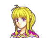

Support Rank C

ちょっと そこのあなた
じっとしてて下さいな
私が ケガを治して差し上げますわ

なんだ どうして
こんな子供が戦場にいるんだ
！！
親はどうした？
はぐれたか？
！！！！
ぶっ 無礼者っ！！
私を 一体
誰だと・・・
はいはい どっかの
偉いさんのお嬢さんだろ？
そのお嬢さんが
なんだって こんな所にいるんだ？
～～～嫌な感じっ！ですわ！！
聞いて驚きなさいっ
私はエトルリア貴族
リグレ公爵家のクラリーネですわ！
何？ では
パント様の・・・
あら お父様をご存じですの？
クレインの妹か・・・
！ お兄様まで！？
あ あなたは一体・・・
いや なんでもない
忘れてくれ
なんでもなくないですわ！
クラリーネといったか
・・・あまり無茶はするなよ
えっ ちょっ ちょっと！
・・・もう なんですの
気になるじゃありませんの！！
Support Rank B
・・・ですから！
いいかげん 白状なさい！！
黙っていても 何の得にも
なりませんことよっ
キィキィうるせぇな・・・
もうカンベンしてくれよ 嬢ちゃん
ク・ラ・リー・ネ！ ですわ
クラリーネ嬢ちゃん
女が男の尻追っかけるのは
あんま 感心しないぜ
ま！ なんてことおっしゃるの！！
信じられませんわ なんて下品な・・・！
そうそう こんな下品な男には
近寄らないにかぎるな
・・・ごまかされませんわ そうやって
私を追い払うつもりでしょう
可愛げがねぇ・・・
本当に あの一家の血筋か？
それですわ！ 私 お兄様のことを
お聞きしたいんですわ！！
げっ しまった
調子狂わせてくれるぜ この嬢ちゃん
私は クラリーネ！
あ ちょっと
お待ちなさいってばっ！！！
Support Rank A
・・・まいった
話すから カンベンしてくれ
わかればよろしいのよ
さっ どうぞ 聞いてましてよ
・・・たいしたことじゃねぇんだ
ただ 俺は以前 剣闘士として
お前の家に雇われていた
それだけのことだ
！？
では あなたがディーク？
そうだが・・・？
まぁ！ そうでしたの！
私 ずっと あなたに
お会いしたかったのよ
ディーク！！
どういう意味だ？
だって あなたはクレイン兄様の
命の恩人でしょう！？
誰に聞いたんだ？
お父様 お母様 お兄様
みんなが あなたのことを
自慢げに語るのを
聞いて育ちましたもの
・・・・・・
あなたが出て行った時
私は まだ小さくて・・・
一人だけ とても
悔しい思いをしていたんですわ
ああ・・・やっと
お目にかかれましたわ
そうか・・・
ま これで気が済んだだろう
ええ
じゃあな もう俺のまわりを
ウロウロしないでくれよ
あら 私どこまでも
あなたに ついて行きますわ！
は？
だって お兄様の命の恩人ということは
私にとっても大事な方ということですわ
それに お兄様が幼い頃のお話とか
色々と聞かせていただきたいですし・・・
・・・付き合いきれん
あ！ 待ってくださいなディーク！
逃がしませんことよ！！